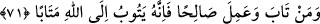
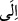
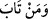
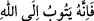

İmam Celdekî der ki: “Toprak suya, su havaya, hava ateşe dönüşür. Bunun aksi
olarak ateş havaya, hava suya, su da toprağa dönüşür. Her unsur iki tabiatın
karışımından meydana geldiği, yâni hem etki etme ve hem de etkilenme özelliği taşıdığı
halde unsurlar birbirlerine dönüşürek istihâle geçirirler. Bu da asıl özellikleri
bakımından bir maddenin mizacının başkasına dönüşeceğini gösteren en açık bir
delildir. Fasıllara gelince, toprak bitkiye, bitki hayvana dönüşür. İbn Sînâ burada
durmuş ve: “Hayvan dönüşmez. Ancak kendi unsurlarına ayrılır ve asıl tabiatına döner.”
demiştir. Biz deriz ki: Toprak ve su sûret olarak asıl varlığı bozulmadıkça bitkiye
dönüşmez. Bitki de asıl mahiyeti bozulmadıkça hayvana dönüşmez. Ona aceba ona nasıl
gizli kaldı ki; bitki ve hayvan pişirmekle bozulur ve insan için gıda olur. Bunların
mizacı midede hazmedilmiş gıda hâline döner, sonra insanın içinde kana dönüşür. Kan
da erkek ve dişi arasında arzu ve isteğin harekete geçmesiyle meni hâline gelir. Sonra
cenin, sonra da insan olur. Aynı şekilde insanın bedeni bozulduktan sonra bitkiye
dönüşmesi mümkündür. Bitki de kurtçuklar gibi çeşitli hayvanlara dönüşür. Bunların
hepsi, hayat suyunu içtiğinde tekrar yaratılışı kabul edene kadar en sonunda toz hâline
gelmiş kemikler hâline gelir. İnsanın cesediyle ilgili cüzleri her ne kadar bir vasıftan
diğer vasfa, bir halden diğer hâle dönüşse ve her birinin asıl mizâcı başka bir hâle gelip
bozulsa da Allah katında mahfuz ve malûmdur. Ancak insanın ruhu, nefsi , aklı ve bâtın
olan zâtı berzah aleminde olduğu gibi kalır.
Hâfız der ki:
Yol erleri gibi varlık bakırından ellerini yıka, arın
Aşk kimyasını bul ve altın hâline gel
“Allah çok bağışlayıcıdır,” Bu yüzden mü’minlerin kötülüklerini iyiliklere çevirir
“engin merhamet sâhibidir.” Onun için iyiliklere sevab verir.
71. Kim tevbe edip iyi davranış gösterirse, şüphesiz o, tevbesi kabul edilmiş
olarak Allah’a döner.
“Kim tevbe edip” günahları tamamen terk etmek ve onları yaptığına pişman olmak
sûretiyle mutlak olarak günahlardan dönüp “iyi davranış gösterirse,” bu sâlih ameller
sâyesinde işlediği hatâlar telâfî olunur veya günahlardan çıkıp tâatlere dâhil olur
“şüphesiz o,” bu yaptıklarıyla ölümden sonra “tevbesi kabul edilmiş” Allah katında
razı olunmuş, cezâsı kaldırılmış ve sevab elde etmiş “olarak Allah’a döner.”
Râğıb der ki: “
” harf-i cerrinin zikredilmesi, inâbeyi gerektirir.”
Âyette şart (
Kim tevbe edip...) ve cezâ (
Allah’a döner.) aynı
anlamda değildir. Cezâda şartta göre fazla bir anlam vardır. Çünkü şart, günahlardan
dönmek mânâsına tevbe etmektir. Cezâ ise Allah’a razı olacağı şekilde dönmektir.